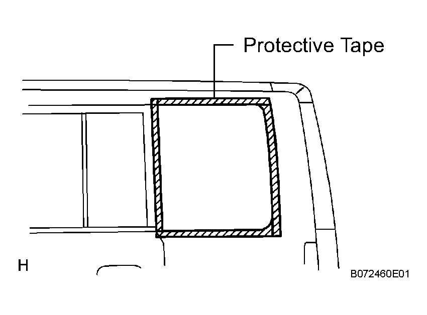

Quarter Window Glass: Removal
HINT:
- Use the same procedures for the LH side and RH side.
- The procedures listed below are for the RH side.
- REMOVE REAR SEATBACK ASSEMBLY RH (See REMOVAL )
- REMOVE REAR SEATBACK ASSEMBLY LH (See REMOVAL )
- REMOVE REAR SEAT CUSHION WITH COVER PAD SUB-ASSEMBLY (See REMOVAL )
- REMOVE CHILD RESTRAINT SEAT ANCHOR BRACKET SUB-ASSEMBLY (See REMOVAL )
- REMOVE REAR SEATBACK HINGE SUB-ASSEMBLY RH (See DISASSEMBLY )
- REMOVE BACK DOOR WEATHERSTRIP
- REMOVE REAR DOOR SCUFF PLATE RH (See REMOVAL )
- REMOVE REAR DOOR OPENING TRIM WEATHERSTRIP RH
- REMOVE NO. 2 DECK BOARD
- REMOVE NO. 1 DECK BOARD
- REMOVE DECK FLOOR BOX RH
- REMOVE DECK FLOOR BOX LH
- REMOVE REAR DECK TRIM COVER (See REMOVAL )
- REMOVE REAR SEAT 3 POINT TYPE BELT ASSEMBLY OUTER RH (See REMOVAL )
- REMOVE DECK TRIM SIDE PANEL ASSEMBLY RH (See REMOVAL )
- REMOVE ROOF SIDE GARNISH INNER RH (See REMOVAL )
- REMOVE QUARTER WINDOW ASSEMBLY
HINT:
Apply protective tape to the outer surface of the vehicle body to prevent scratches.
NOTE: When separating the quarter window glass from the vehicle, be careful not to damage the vehicle's paint or interior/exterior ornaments.
Courtesy of © TOYOTA, LICENSE AGREEMENT TMS1002- Using a knife, cut off the moulding, as shown in the illustration.NOTE: Do not damage the body with the knife.
- Remove the remaining moulding.
HINT:
Make a partial cut in the moulding. Then, pull and remove it by hand.
- From the interior, insert a piano wire between the vehicle body and the quarter window glass as shown in the illustration.
- Tie objects that can serve as handles (for example, wooden blocks) to all wire ends.
- Cut through the adhesive by pulling the piano wire around the quarter window glass.NOTE: Leave as much adhesive on the vehicle body as possible when removing the quarter window glass.
- Using suction cups, remove the quarter window glass.
- Using a knife, cut off the moulding, as shown in the illustration.
- CLEAN QUARTER WINDOW ASSEMBLY
- Clean the outer edges of the glass with white gasoline.
- CLEAN VEHICLE BODY
- Clean and shape the contact surface of the vehicle body.
- On the contact surface of the vehicle body, use a knife to cut away excess adhesive as shown in the illustration.
HINT:
Leave as much adhesive on the vehicle body as possible.
NOTE: Be careful not to damage the vehicle body. - Clean the contact surface of the vehicle body with cleaner.
HINT:
Even if all the adhesive has been removed, clean the vehicle body.
- On the contact surface of the vehicle body, use a knife to cut away excess adhesive as shown in the illustration.
- Clean and shape the contact surface of the vehicle body.